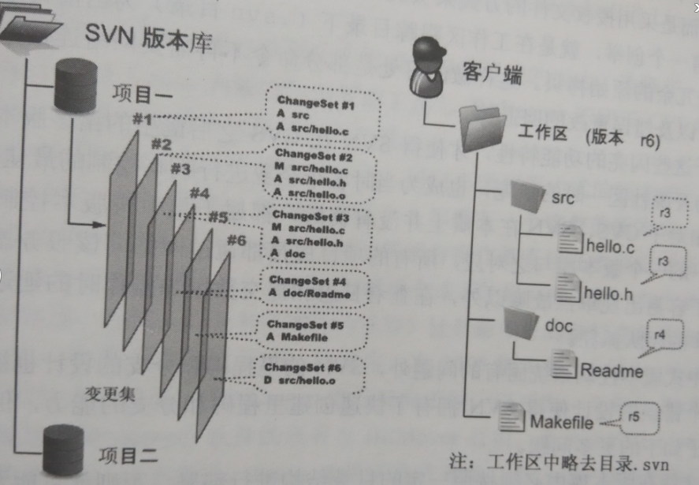

SVN版本控制系统示意图

SVN的每一次提交，都会在服务器端的db/revs和db/revprops目录下各创建一个以顺序数字编号命名的文件。其中，db/revs目录下的文件（即变更集文件）记录了与上一个提交之间的差异（字母A表示新增，M表示修改，D表示删除）。在db/revprops目录下的同名文件则保存着提交日志、作者、提交时间等信息。这样设计的好处有：
正是由于这些闪亮的功能特性，才使得SVN在CVS之后诞生的诸多版本控制系统中脱颖而出，成为开源社区一时的新宠，也成为当时各个企业进行版本控制的最佳选择之一。
但是相对于CVS，SVN在本质上并没有突破，都属于集中式版本控制系统。即一个项目只有唯一的一个版本库与之对应，所有的项目成员都通过网络向该服务器进行提交。这样的设计除了容易出现单点故障以外，在查看日志和提交数据等操作时的延迟，会让基于广域网协同工作的团队抓狂。
除了集中式版本控制系统固有的问题外，SVN的里程碑和分支的设计也被证明是一个错误，虽然这个错误的设计使得SVN有了快速创建里程碑和分支的能力，但是这个错误的设计也导致了如下更多的问题。
2009年年底，SVN由CollabNet公司交由Apache社区管理，至此SVN成为了Apache组织的一个子项目（http://en.wikipedia.org/wiki/Apache_Subversion）。这对SVN到底意味着什么？是开发的停滞？还是新的开始？结果如何我们将拭目以待。